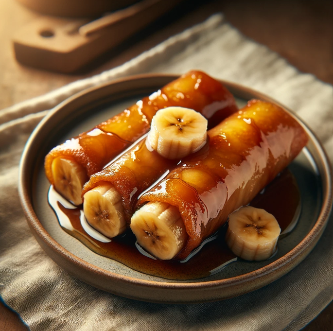

Turon
Ingredients
- Ripe saba bananas
- Lumpia wrappers
- Sugar
- Cooking oil
| Nutrient |
Amount |
| Calories |
180 kcal |
| Protein |
2 g |
Meal Procedure
- Prepare the filling:
- Peel and halve 1 saba banana lengthwise.
- You can optionally add other fillings like jackfruit strips, langka (plantain), or cheese.
- Prepare the wrapper:
- Lay a lumpia wrapper like a diamond on a flat surface.
- Sprinkle a thin layer of brown sugar in the center of the wrapper.
- Assemble the turon:
- Place the banana half (or other filling) on the sugar in the center.
- Fold the bottom pointed end of the wrapper over the filling.
- Fold the side ends inward and tightly roll the turon into a log, sealing the pointed edge with water.
- Frying:
- Heat enough oil (vegetable or coconut oil) in a pan over medium heat (325°F).
- Carefully place the turon(s) in the hot oil. Fry for 2-3 minutes per side, or until golden brown and crispy.
- Drain on paper towels to remove excess oil.